Version 0.6.0 · octobre 2026 · pour Android 7.0 et plus récent
Ingredients vérifie les aliments pour vous : vous scannez le code-barres, et l’app vous dit si le produit convient à votre profil (sans porc ni alcool, végétarien, vegan, allergies, santé) – et pourquoi, avec les sources. Gratuit, sans publicité, vos données restent sur le téléphone.
Quel APK ? Sur la page de téléchargement : « Standard » convient à presque tous les téléphones depuis 2017. Si le téléphone affiche « Application non installée » ou « non compatible », prenez « Téléphones anciens (32 bits) ». En cas de doute : « Universel » (plus lourd, marche partout).
Avant de commencer
Être en Wi-Fi (le fichier fait environ 57 Mo, « Universel » 121 Mo).
Avoir au moins 500 Mo libres : Paramètres → Batterie et maintenance de l’appareil → Stockage.
Méthode 1 — Directement sur le téléphone (10 minutes)
Désactiver le Blocage automatique (Samsung) :
Paramètres → Sécurité et confidentialité → Blocage automatique → Désactivé (confirmez avec votre code).
Désactiver la « Protection avancée » d’Android, si elle existe sur votre téléphone : tapez Protection avancée dans la barre de recherche des Paramètres. Si elle est activée, désactivez-la (elle interdit toute installation hors Play Store). Si la recherche ne trouve rien, passez à l’étape suivante.
Télécharger l’APK : ouvrez le lien dans Chrome. Si Chrome avertit « ce type de fichier peut être dangereux », touchez Télécharger quand même. Attendez la fin du téléchargement.
Ouvrir le fichier depuis « Mes fichiers » (pas depuis la notification) :
Mes fichiers → Téléchargements → le fichier .apk.
Autoriser cette source : le téléphone affiche « votre téléphone n’est pas autorisé à installer des applis inconnues provenant de cette source ». Touchez Paramètres, activez Autoriser à partir de cette source, puis revenez en arrière.
Chemin manuel si besoin : Paramètres → Applications → ⋮ (en haut à droite) → Accès spécial → Installer des applis inconnues → Mes fichiers (et aussi Chrome) → Autorisé.
Touchez Installer.
Si Google Play Protect bloque (« Appli bloquée pour protéger votre appareil » ou « Appli non sécurisée ») : touchez Plus de détails → Installer quand même.
S’il n’y a que OK : ouvrez Play Store → votre photo de profil (en haut à droite) → Play Protect → ⚙ (roue dentée) et désactivez « Analyser les applis avec Play Protect », puis recommencez l’étape 4.
Ouvrez Ingredients. C’est installé.
Remettez les protections : Blocage automatique activé, Play Protect activé, et retirez l’autorisation « Installer des applis inconnues » à Mes fichiers et Chrome. L’app reste installée et continue de recevoir ses mises à jour.
Ça ne marche pas ? Trouvez votre message
Ce que vous voyez
Cause
Solution
« Installation bloquée » / « bloquée par le Blocage automatique »
Blocage automatique encore actif
Étape 1. Vérifiez qu’il est bien sur Désactivé, puis redémarrez le téléphone.
« …pas autorisé à installer des applis inconnues provenant de cette source »
L’app qui ouvre le fichier n’a pas la permission
Étape 5, pour Mes fichiers ET Chrome (et WhatsApp/Gmail si le fichier vient de là).
« Appli bloquée par Play Protect » / « Appli non sécurisée »
Google ne connaît pas l’app
Étape 7 (« Installer quand même » ou désactiver l’analyse Play Protect le temps de l’installation).
« Application non installée » / « Appli non installée car le package est en conflit »
Une ancienne version d’Ingredients venant d’une autre source est installée
Désinstallez l’ancienne Ingredients (appui long sur l’icône → Désinstaller), puis réinstallez. Vos réglages seront à refaire.
« Application non installée » / « non compatible » sans autre détail
Mauvais type de processeur, fichier incomplet ou manque de place
Prenez « Téléphones anciens (32 bits) » ou « Universel » sur la page de téléchargement. Vérifiez que le fichier est complet (57, 48 ou 121 Mo) dans Mes fichiers ; sinon supprimez-le et retéléchargez en Wi-Fi. Libérez de l’espace.
« Erreur d’analyse » / « Problème lors de l’analyse du package »
Fichier abîmé pendant le téléchargement
Supprimez-le, retéléchargez (méthode 1) ou transférez-le autrement (méthode 2).
Rien ne se passe quand on touche le fichier
Ouvert depuis la notification ou un aperçu
Ouvrez-le depuis Mes fichiers → Téléchargements.
« Bloqué par votre administrateur » / téléphone professionnel
Téléphone géré par une entreprise (Knox, profil pro)
Impossible de contourner : utilisez un téléphone personnel.
Tout a été fait et ça refuse encore
Blocage Samsung/Google non identifié
Méthode 3 (câble USB + ordinateur) : elle contourne l’installateur du téléphone.
Méthode 2 — Recevoir le fichier autrement
Utile si le téléchargement échoue ou si le fichier est abîmé. Le fichier .apk peut être envoyé :
par Quick Share depuis un autre téléphone Samsung ou un PC Windows (le fichier arrive dans Mes fichiers → Téléchargements) ;
par câble USB depuis un ordinateur : branchez le téléphone, choisissez Transfert de fichiers dans la notification USB, copiez le fichier dans le dossier Download du téléphone.
Ensuite, reprenez la méthode 1 à partir de l’étape 4.
Méthode 3 — Câble USB + ordinateur (marche à coup sûr)
C’est la méthode qui a fonctionné quand l’installation directe était refusée. Il faut un ordinateur (Windows, Mac ou Linux) et un câble USB-C.
Sur le téléphone :
Activez les options de développement : Paramètres → À propos du téléphone → Informations sur le logiciel → touchez 7 fois « Numéro de version » (entrez votre code). Le message « Mode développeur activé » apparaît.
Paramètres → Options de développement → activez Débogage USB.
Branchez le téléphone à l’ordinateur, déverrouillez l’écran. À la question « Autoriser le débogage USB ? », cochez Toujours autoriser depuis cet ordinateur → Autoriser.
(remplacez par le vrai nom du fichier ; sur Mac/Linux : ./adb install -r ~/Downloads/ingredients.apk). Quand Success s’affiche, c’est installé.
Pour finir : Options de développement → Débogage USB → désactivé.
Sécurité : n’installez des APK que depuis une source que vous connaissez (ici : la personne qui vous a envoyé le lien). Remettez toujours le Blocage automatique et Play Protect après l’installation.
Après l’installation : les mises à jour
À chaque ouverture, l’app télécharge la nouvelle version en arrière-plan. Un bandeau « Une nouvelle version de l’app est prête » propose Redémarrer pour l’installer.
Scanner → roue ⚙ → Version de l’app montre la version et un bouton Rechercher une mise à jour.
Pas besoin de réinstaller d’APK, sauf si on vous le demande explicitement.
Partie B — Utiliser l’app
1L’accueil
La langue (Français, Deutsch ou English) se règle dans Mon profil → Langue. Au premier lancement, l’app prend la langue du téléphone.
Vérifier pour : indique pour quelle personne on vérifie (s’il y a plusieurs profils). Touchez un prénom pour changer.
Le grand bouton vert Scanner un code-barres est le plus rapide.
En dessous : Photographier une étiquette, Rechercher un produit, Historique et favoris, Mes courses et Mon profil.
Tout en bas : Partager l’app envoie le lien de téléchargement à vos proches par WhatsApp, SMS ou e-mail.
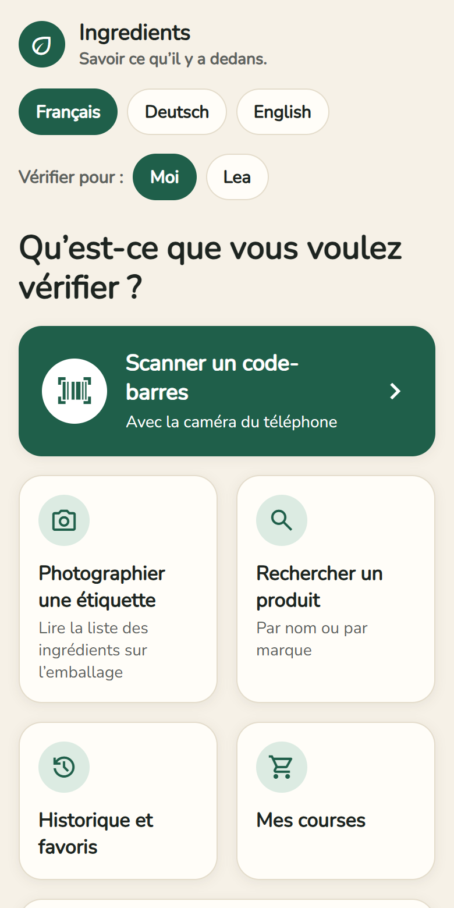
2Créer les profils (une seule fois)
Touchez Mon profil. Tout reste uniquement sur votre téléphone.
Dans Profils, « Moi » existe déjà. Pour une autre personne (ex. un enfant allergique) : écrivez son prénom → Ajouter un profil.
Le profil en vert est celui que vous réglez et qui sert à tous les verdicts.
Affichage : Système (comme le téléphone), Clair ou Sombre – dans Mon profil → Affichage.
Renommer change le nom ; « Supprimer le profil … » l’efface (après confirmation).
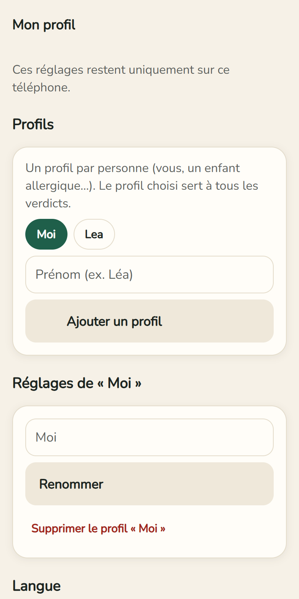
3Ce que j’évite, allergies
Ce que j’évite : interrupteurs Sans porc ni alcool, Végétarien, Vegan. Sous chacun, ce qui est vérifié exactement.
Allergies et intolérances : touchez les 14 allergènes UE qui vous concernent (gluten, lait, arachides, fruits à coque…). Ceux choisis deviennent verts.
Sans profil, l’app explique les ingrédients mais ne donne pas de verdict.
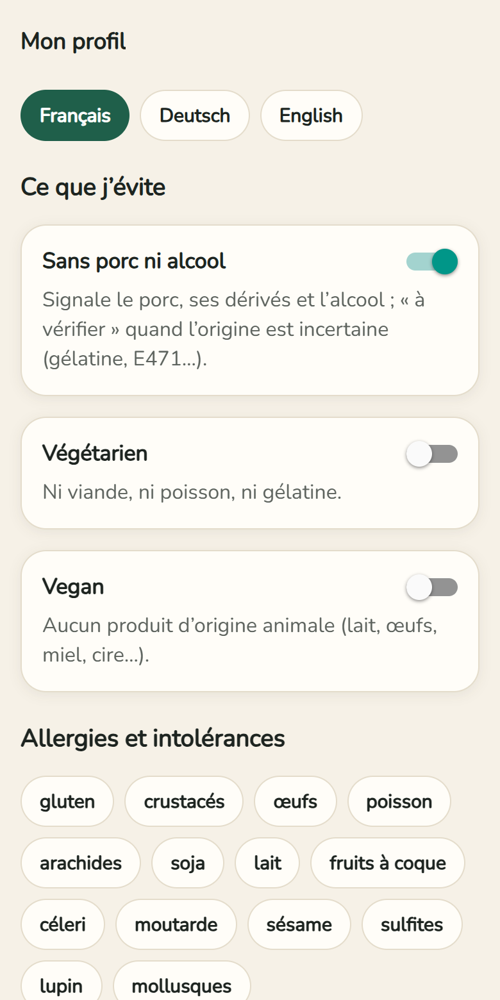
4Ma santé et Mes règles
Ma santé : ce que votre médecin vous conseille de limiter – Sucres (diabète…), Sel (tension…), Graisses saturées (cholestérol…), Additifs à risque. Un produit trop riche passe alors « À vérifier ».
Mes règles : un mot à repérer, par ex. « Palmöl ». Choisissez Interdit ou À surveiller → Ajouter la règle. Supprimée par erreur ? Un bandeau Annuler apparaît quelques secondes en bas.
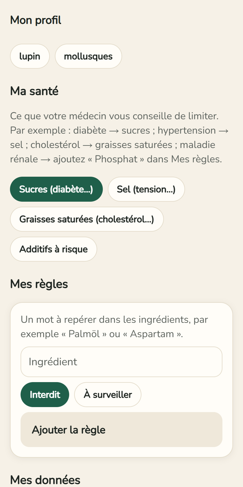
5Scanner un produit
Accueil → Scanner un code-barres.
La première fois : Autoriser la caméra. Les images ne sont ni enregistrées ni envoyées.
Placez le code-barres dans le cadre : le résultat s’ouvre tout seul.
Quand le code est lu, le cadre devient vert et le téléphone vibre brièvement.
Ça ne lit pas ? Tapez les chiffres sous le code-barres → Vérifier ce code.
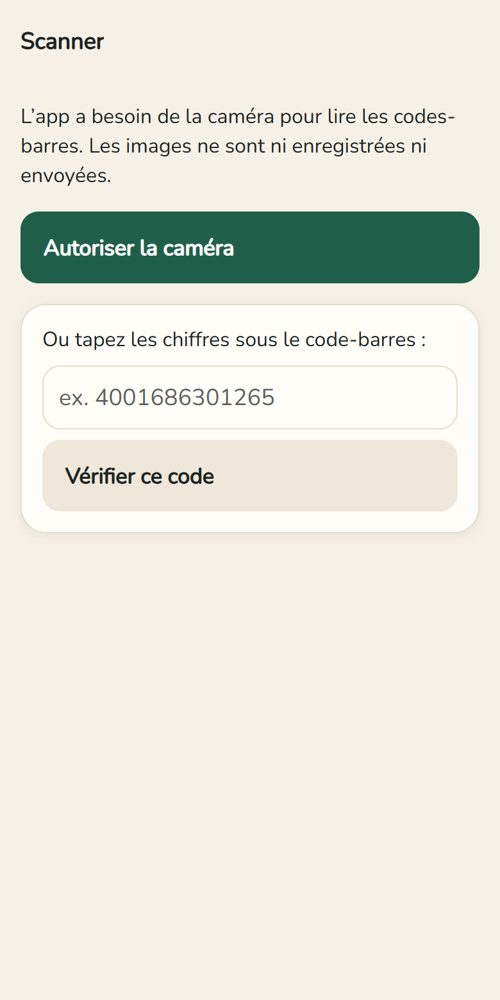
6Lire le résultat
En haut : photo, nom et marque du produit.
Trois boutons : ☆ Favori, + Liste de courses, ⇄ Comparer.
Le verdict dans une carte de couleur : ✓ Compatible, ! À vérifier, ✕ Incompatible ou ? Inconnu (pas de liste d’ingrédients). Dessous, la confiance (élevée, moyenne, faible).
Écouter le résultat : le téléphone lit le verdict à voix haute.
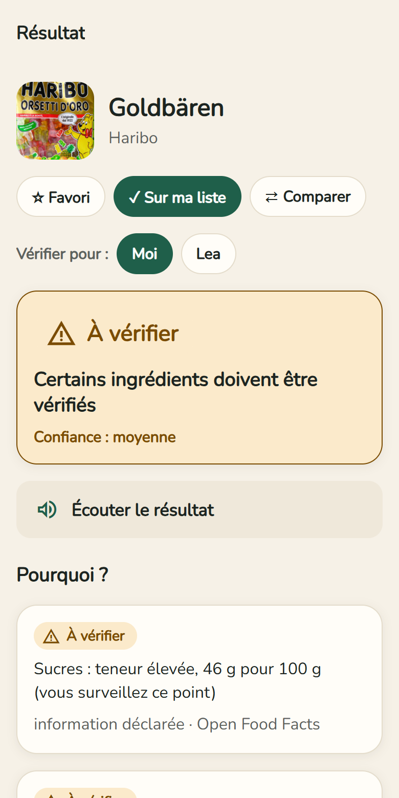
7Pourquoi ? et alternatives
Pourquoi ? donne chaque raison du verdict, avec le mot tel qu’il est écrit sur l’emballage et la source. Si vous avez des allergies, les allergènes déclarés suivent juste après. Tout en bas, Labels et sources + ouvre les détails.
« À vérifier » veut dire que les données ne permettent pas de trancher (ex. gélatine sans espèce indiquée) : regardez l’emballage ou demandez au fabricant.
Des alternatives pour vous : Chercher des alternatives qui me conviennent montre des produits de la même catégorie qui vous conviennent et font mieux sur le point qui posait problème. Sans publicité : aucune marque ne paie. Si votre profil a des interdits (allergie, porc…), l’app ne propose que des produits dont elle a vérifié la liste ; si Open Food Facts est surchargé, réessayez dans une minute.
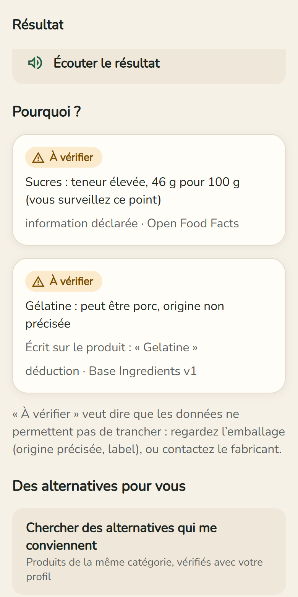
8La liste des ingrédients surlignée
rouge = vous l’évitez · orange = à vérifier · violet = santé : à surveiller.
Souligné = ingrédient expliqué : touchez-le pour en savoir plus.
Pointillés = ingrédient que l’app ne connaît pas encore.
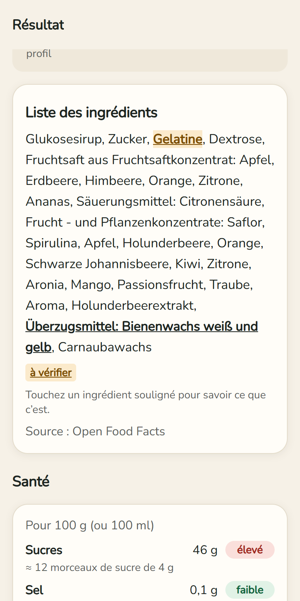
9Santé
Sucres, sel, graisses saturées et matières grasses pour 100 g, avec faible / modéré / élevé.
Les sucres en morceaux de sucre, le sel en % du maximum conseillé par jour (OMS).
Puis les ingrédients à risque avec leur niveau : Risque reconnu, À limiter ou Risque débattu, et leurs sources (OMS, EFSA…).
Un produit sain reçoit Bon choix !
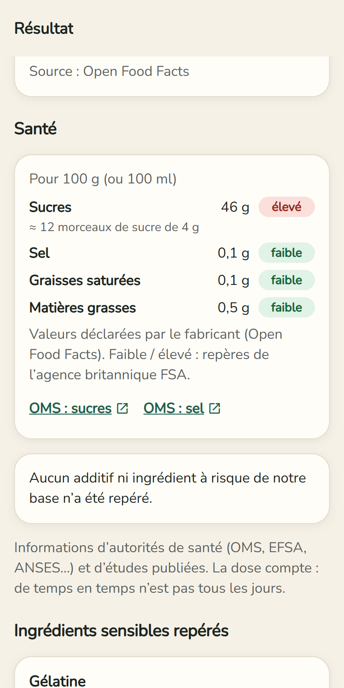
10La fiche d’un ingrédient
Après avoir touché un ingrédient souligné :
Qu’est-ce que c’est ? – une explication simple.
Autres noms – comment il apparaît sur d’autres étiquettes (y compris les numéros E).
En détail – pour les cas délicats (par ex. arôme bacon) : définitions, ce qui est établi, pourquoi « à vérifier » et comment lever le doute.
Ce que ça implique pour votre profil et les effets sur la santé.
Sources officielles et vérifiées – textes de loi européens, associations de consommateurs, labels ; avec la date de la dernière vérification.
En savoir plus – liens vers Wikipédia et les sources officielles.
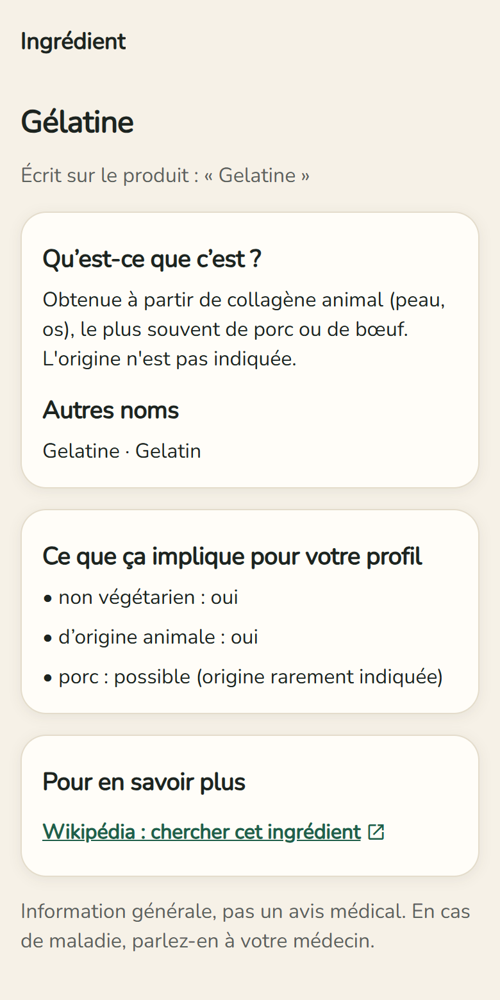
11Comparer deux produits
Sur un produit : ⇄ Comparer.
Scannez le 2e produit ou choisissez-le dans vos produits.
Les deux sont côte à côte : verdict, sucres, sel, graisses, additifs à risque, Nutri-Score. Le meilleur est marqué mieux. Un écart de moins de 10 % ne compte pas.
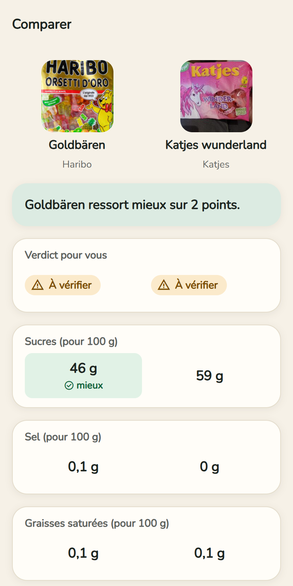
12Historique et favoris
Accueil → Historique et favoris : tous les produits consultés, lisibles même sans Internet.
Filtres : Tous / ★ Favoris, par verdict (Recommandés, À vérifier, Non recommandés) et par catégorie (produits laitiers, boissons, sucreries…).
Les verdicts sont recalculés avec le profil choisi.
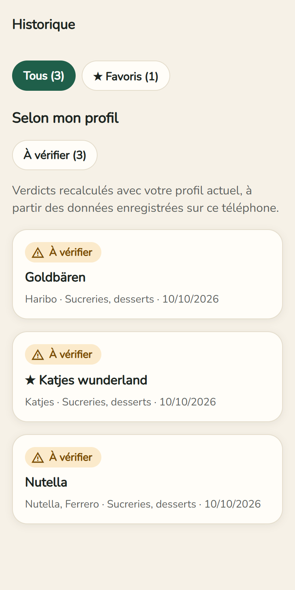
13Liste de courses
Sur un produit : + Liste de courses.
Accueil → Mes courses : cochez ce que vous avez acheté. Retirer les articles achetés peut être annulé quelques secondes.
Envoyer la liste : par WhatsApp, SMS ou e-mail.
Vous faites les courses pour quelqu’un ? Choisissez son profil en haut : un bandeau rouge signale ce qui ne lui convient pas.
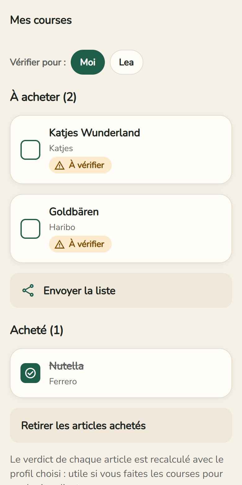
14Photographier une étiquette
Quand un produit est inconnu ou sans liste d’ingrédients :
Photographier une étiquette (ou, dans le résultat, Photographier la liste des ingrédients).
Photographiez le paragraphe « Zutaten » bien à plat, net et éclairé.
Relisez le texte lu et corrigez les lettres fausses → Analyser ou Utiliser pour ce produit (gardé pour la prochaine fois).
15Ajouter un produit à Open Food Facts
Open Food Facts est la base libre utilisée par l’app. Un produit que vous ajoutez sera ensuite reconnu pour tout le monde.
Produit inconnu : Ajouter ce produit à Open Food Facts. Produit sans liste : Compléter sur Open Food Facts.
Une seule fois : créez un compte gratuit sur openfoodfacts.org et entrez dans l’app votre nom d’utilisateur (pas l’e-mail) et votre mot de passe. Ils restent chiffrés sur le téléphone.
Prenez les photos (face avant, ingrédients, valeurs nutritionnelles), vérifiez le texte, acceptez la licence libre → Envoyer à Open Food Facts.
16Signaler une erreur, mises à jour, tout effacer
Signaler une erreur (en bas de chaque résultat) : votre messagerie s’ouvre avec un e-mail prêt. Votre profil n’est jamais envoyé.
Les mises à jour arrivent toutes seules : quand « Une nouvelle version de l’app est prête » apparaît, touchez Redémarrer. S’il faut installer un nouvel APK, l’accueil affiche « Nouvelle version disponible » → Télécharger la nouvelle version ; vos réglages sont conservés.
Mon profil → Mes données → Tout supprimer : profils, historique, favoris, liste de courses et compte sont effacés du téléphone.
Partie C — À savoir
L’app ne remplace ni l’emballage, ni votre médecin, ni une autorité religieuse. Elle ne certifie rien. En cas d’allergie grave, lisez toujours l’étiquette.
Quand elle ne sait pas, elle le dit (« Inconnu », confiance faible).
Aucune publicité, aucun compte obligatoire. Données produits : Open Food Facts (licence ODbL). Pour lire une photo, l’image est envoyée au service OCR.space ; votre profil, jamais.